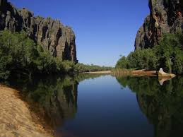

Hiking in the Pacific Northwest is so fun! One of the best places to hike around is the Gorge.The Gorge runs along the northern border of Oregon and within an hours drive of Portland.
The Oregon Coast is another great area to spend the day hiking. There are hikes up and down the entire coast. Some of the nest hikes are known to be around Newport, but we encourage you to try them all.


Crater Lake is in the southern part of Oregon and is one of the more popular tourist destinations. It is known as a must see while you are in the Pacific Northwest. It is beautiful in both summer and winter.